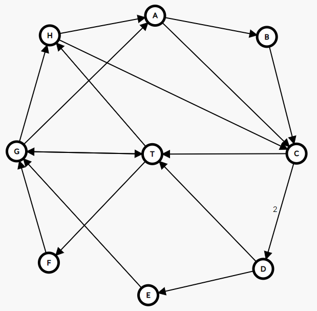
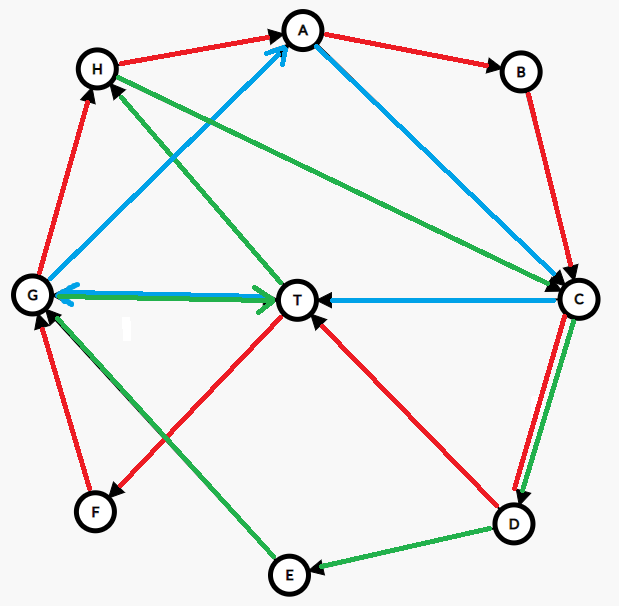
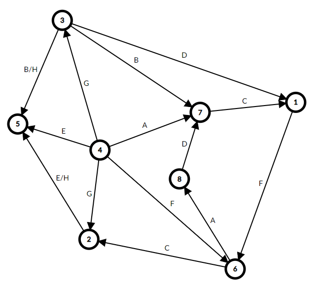
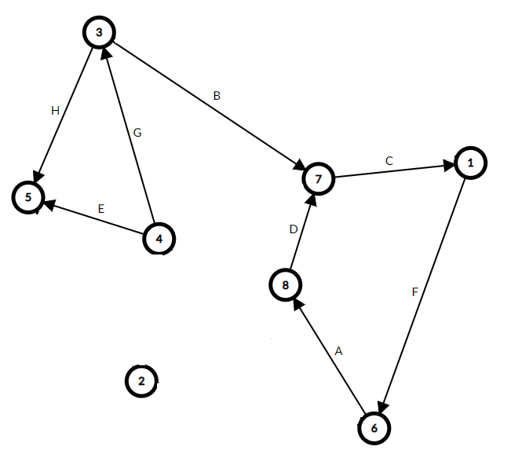

Solution The Dining Philosophers
Answer LOCKED OUT
Written by Jon Schneider
This puzzle is a duck conundrum about eating food. In each of nine courses, eight philosophers each have their own sequence of tasks to perform. While each philosopher must perform their list of tasks in order, different philosophers can work at different speeds and these different sequences of tasks can be interleaved arbitrarily—with the caveat that a philosopher cannot proceed with an instruction until it is possible for the philosopher to carry it out exactly as written (e.g., a philosopher cannot grab the salt shaker from the center of the table if another philosopher is currently holding it). If the philosophers are unlucky and perform their actions in the wrong order, they might reach a state where no philosopher can make progress on their current instruction, or even worse, a state where one of the philosophers rudely flips the table over and ruins dinner. In this case, the philosophers should reset the state of the course and try again—there is always at least one way (and sometimes many ways) for the philosophers to eat dinner so that each philosopher reaches the end of their list of instructions.
The nine foods in these nine courses are each strongly associated with specific countries (e.g., sometimes they are the national dish of a specific country), and the courses are sorted alphabetically in order by country name. In addition, if the philosophers perform their tasks correctly, at the end of each course the following two things will be true:
- There will be exactly two philosophers left with food in front of them. The positions of these two philosophers around the table form a semaphore letter. This is also obliquely clued by the fact that semaphores can be used to solve the original dining philosophers problem.
- The Rubik’s cube on the center of the table will display a pattern resembling the national flag of one of the 9 countries corresponding to the courses.
Each of the 9 courses can be solved separately, and no matter how they are solved, the semaphore letter and flag extracted are the same (details for doing this for each of the 9 courses are included below). Doing so gives the following list of semaphore letters and flags.
| # | Course Name | Origin Country | Semaphore | Rubik’s Cube Flag |
|---|---|---|---|---|
| 1 | Wiener schnitzel | Austria | L | Peru |
| 2 | Butter cookies | Denmark | T | Austria |
| 3 | Ratatouille | France | D | Nigeria |
| 4 | Goulash | Hungary | K | Netherlands |
| 5 | Soda Bread | Ireland | U | Denmark |
| 6 | Spaghetti | Italy | C | Hungary |
| 7 | Hagelslag | Netherlands | E | France |
| 8 | Jollof Rice | Nigeria | O | Ireland |
| 9 | Ceviche | Peru | O | Italy |
The correspondence between the origin country of each course and the country whose flag is depicted on the Rubik’s cube creates a cycle containing all 9 courses. Reading the semaphore letters along this cycle we find the answer to this puzzle, LOCKED OUT.
Course 1: Wiener schnitzel (Austria)
Only B and F have food at the end of the course, which translates to the semaphore letter L.
The final sequence of operations done on the cube is dllUffddLuLRDbUlubDRBrd. Applying this sequence of operations results in three vertical stripes of red, white, and red on the front face of the cube. This is the flag of Peru.
Course 2: Butter cookies (Denmark)
Some preliminary observations:
- Before A or B count their cookies, C, D, E, and F must apply some prefix of their operations so that A and B both have exactly 100 cookies. Since A waits to be passed the salt from E and F, E and F must complete all of ten of their operations (C and D aren’t explicitly required to use all their actions, but we will see that this is necessary). G and H cannot do their operations until A and B count their cookies.
- E and F cannot perform their operation while A and B have the same number of cookies (since they wait for these counts to differ, and will wait endlessly). Since D’s operation is the only operation that causes the counts to differ if they are originally the same, D must perform a step between when E or F performs a step and when C performs a step.
- C is the only operation that increases the number of cookies on B’s plate. It is also the only operation that causes A and B’s counts to become equal if they are not already equal.
- Since D adds 1000 cookies to A’s plate, D’s operation must be followed by at least one E or F operation before there is another C operation.
- Let A and B denote the number of cookies on A’s plate and B’s plate respectively. Note that an E/F action with bolded number x modifies the cookie counts by setting A = min(A, B + x). As a consequence of this, applying several consecutive E/F actions with bolded numbers x1, x2, …, xk is the same as applying a single E/F action with bolded number min(x1, x2, …, xk).
Altogether, this means that the interleaved sequence of operations will look like (some prefix of):
In other words, we need to partition E and F’s instructions into at most 5 chronologically increasing chunks such that A and B have 100 cookies at the end of this (here by chronologically increasing, we mean that if chunk i comes before chunk j, then each E operation in chunk i comes before each E operation in chunk j, and each F operation in chunk i comes before each F operation in chunk j). Given how E/F actions work, this means that we need to partition (some prefixes) of the two arrays below into at most 5 chronologically-increasing chunks such that the sum of the minimums of the chunks is equal to 100.
F: 18, 27, 21, 30, 12, 19, 8, 27, 30, 10
It turns out 100 is the maximum number of cookies A and B can receive, and that there is a mostly unique way to partition E and F’s actions that requires 5 chunks. This partition is:
This partition is unique up to some minor alterations (e.g. whether to include 27 in the first or second chunk). More importantly any valid partition results in Bacon having the following sequence of cookie counts (after C updates, the only times when A = B): 18, 39, 69, 72, 100; see the appendix for a proof of uniqueness. With this, we can now figure out the effect of G and H’s actions.
G only performs one action (the action for 39 cookies), which swaps the plates of B and H. This leaves A and H as the only philosophers with food on their plates, which generates the semaphore letter T.
H performs two actions: first the action for 72 cookies, second the action for 69 cookies. This results in the overall sequence of operations llddBlURfDFBULurbuRFL. Performing this sequence results in three horizontal stripes colored red, white, and red. This is the flag of Austria.
Course 3: Ratatouille (France)
Summary of only salt shaker operations:
- A: Take → F, wait → center, wait → H
- B: Take → D, wait → A, wait → G
- C: Take → H
- D: Wait → center
- E: Take → G, wait → center
- F: Wait → B, wait → center
- G: Wait → F, wait → center
- H: Take → A, wait → E, wait → B
Note that the overall order of operations is fixed by the order in which A, B, C, E, and H take the salt shaker from the center of the table (these are the only philosophers which do this, and they all do this at the beginning of their set of instructions). We will show that this order is fixed due to the following constraint: if one philosopher tries to pass the salt to a philosopher waiting to take the salt from the center of the table, this results in deadlock.
At the very beginning, only B can take the salt from the center (this results in the path B → D → center). All other choices result in deadlock:
- A → F → B (trying to take from center, deadlock).
- C → H (trying to take from center, deadlock).
- E → G → F → B (trying to take from center, deadlock).
- H → A (trying to take from center, deadlock).
Next, only A can take the salt (resulting in the path A → F → B → A → center). The other three choices result in deadlock:
- C → H (trying to take from center, deadlock).
- E → G → F → B → A (trying to take from center, deadlock).
- H → A (trying to take from center, deadlock).
Next, only E can take the salt (resulting in the path E → G → F → center). The other two choices result in deadlock:
- C → H (trying to take from center, deadlock).
- H → A → H → E (trying to take from center).
Next, only H can take the salt (resulting in the path H → A → H → E → center). The other choice (C → H) results in deadlock. Finally, C must take the salt, resulting in the path C → H → B → G → center. In order, the five paths the salt shaker takes are:
- center → B → D → center
- center → A → F → B → A → center
- center → E → G → F → center
- center → H → A → H → E → center
- center → C → H → B → G → center
Now, let’s examine what happens to the plates at the table and the Rubik’s cube. Food gets eaten and the table rotates only when A, B, C, D, E, or F finish their last pass of the salt shaker. This happens in the order D, F, A, E, C, B. We can perform their actions on the table in order:
| Action | State of Table (A-H, 1 = uneaten, 0 = eaten). |
|---|---|
| Original state | 1, 1, 1, 1, 1, 1, 1, 1 |
| D eats ratatouille | 1, 1, 1, 0, 1, 1, 1, 1 |
| F eats ratatouille | 1, 1, 1, 0, 1, 0, 1, 1 |
| F rotates 1 CW | 1, 1, 1, 1, 0, 1, 0, 1 |
| A eats ratatouille | 0, 1, 1, 1, 0, 1, 0, 1 |
| A rotates 1 CCW | 1, 1, 1, 0, 1, 0, 1, 0 |
| E eats ratatouille | 1, 1, 1, 0, 0, 0, 1, 0 |
| E rotates 1 CW | 0, 1, 1, 1, 0, 0, 0, 1 |
| C eats ratatouille | 0, 1, 0, 1, 0, 0, 0, 1 |
| B eats ratatouille | 0, 0, 0, 1, 0, 0, 0, 1 |
| B rotates 1 CW | 1, 0, 0, 0, 1, 0, 0, 0 |
At the end of this process, only A and E end up with uneaten ratatouille. This forms the semaphore letter D.
The operations done on the Rubik’s cube form the sequence lffruurbDUrrfrfduubbDfB. Performing this sequence results in three vertical stripes colored green, white, and green. This is the flag of Nigeria.
Course 4: Goulash (Hungary)
Summary of only goulash pot operations:
- A: Wait → C, wait → B
- B: Wait → C
- C: Wait → D, wait → center, wait → D
- D: Wait → E, wait → center
- E: Wait → G
- F: Take → G
- G: Take → A, wait → H, wait → center
- H: Take → C, wait → A

It will be useful to consider the above directed graph, where we draw an edge connecting philosophers X and Y if at some point X passes a pot of goulash from X to Y. We add an additional node T denoting the center of the table (where each pot starts and must return to). The label ‘2’ on the edge from C → D represents the fact that there are 2 instances where C passes D a pot of goulash. In order to complete this task without any philosopher flipping the table over, we need to decompose this graph into three cycles of lengths 4, 6, and 8 (moreover, these cycles must be consistent with the order of each philosopher’s operations; this information will be useful).
There is a unique way to do this (shown in the picture below). Here is one solve path:
- F takes a pot from the center and passes it to G. G takes a pot from the center and passes it to A. H takes a pot from the center and passes it to C. This allows us to deduce the first two edges of each of the three cycles (we’ll color these ‘red’, ‘blue’, and ‘green’ respectively).
- We now claim that the pot that G passes to A, A must pass to C. This is because the pot that G passes to A is the first pot that A receives; the second pot that A receives must have come from G through H, so it’s impossible that A receives that pot first. Therefore A → C is also blue.
- Consider the start of the cycle T → G → A → C. The only way to complete this cycle using an even number of edges less than or equal to 8 is by returning directly to T from C: i.e., the blue cycle is the cycle T → G → A → C → T of length 4.
- This means the green cycle (which currently starts T → H → C) must continue to D (since both remaining edges out of C go to D). It then must go to E (since T → H → C → D → T has length 4, but the length-4 cycle has already been determined) and then onto G (this is forced). From G, returning to T forms a cycle of length 6 (T → H → C → D → E → G → T). There is no way to instead extend this to a cycle of length 8, so the green cycle must be the cycle T → H → C → D → E → G → T of length 6.
- Now the remaining red cycle is fixed: it must be the cycle T → F → G → H → A → B → C → D → T of length 8.

- A: Wait → C, wait → B
- B: Wait → C
- C: Wait → D, wait → center, wait → D (note: because C’s second and third pot both went through A, we can order them to infer that C’s third pot is in the red cycle and C’s first pot is in the green cycle, instead of vice versa; however, resolving this isn’t needed to extract)
- D: Wait → E, wait → center
- E: Wait → G
- F: Take → G
- G: Take → A, wait → H, wait → center
- H: Take → C, wait → A
Now, let’s examine who eats their goulash and what happens to the Rubik’s cube. For eating the goulash, two philosophers eat goulash that was in the same pot if they belong to the same cycle above. We now proceed in order of philosophers.
- A is part of the red and blue cycles but E is only part of the green cycle, so A does not eat his goulash.
- B and F both are part of the red cycle, so B eats his goulash.
- C is part of all cycles, so C eats his goulash.
- D and H are both part of the red cycle, so D eats his goulash.
- E and H are both part of the green cycle, so E eats his goulash.
- F is only part of the red cycle and E is only part of the green cycle, so F does not eat his goulash.
- G and C are both part of every cycle, so G eats his goulash.
- H and D are both part of the red cycle, so H eats her goulash.
A and F are the only philosophers who end up with uneaten goulash: this forms the semaphore letter K.
Luckily, all three of the Rubik’s cube operations occur while passing the same pot (the 5L pot), so they are consistently orderable. The overall sequence of operations is fflluubllFLUluFuFbUBlFul. Performing this sequence results in three horizontal stripes colored red, white, and blue. This is the flag of Netherlands.
Course 5: Soda Bread (Ireland)
Essentially, our goal is to sort this permutation of 1 through 8 using a fixed number of adjacent transpositions (in fact, a fixed number of each type of transposition). Some preliminary observations that make this easier:
- 7 and 8 are already in their correct locations, and there are no swaps that swap F and G or G and H, so really we are sorting a permutation of 6 numbers (the permutation 3, 6, 2, 1, 5, 4).
- The inversion count of this permutation is 8. We also have 8 total adjacent swaps to use: 2 ABs, 2 BCs, 1 CD, 1 DE, and 2 EFs. This means that every swap we do must decrease the number of inversions by 1: in other words, we must never swap a smaller number behind a larger number.
- We need to use 2 AB swaps. Since A starts with 3 slices, this means that A must take on the values 2 and 1. In particular, we cannot swap 2 with 1 until 2 is at the front of the list.
- Similarly, we need to use 2 EF swaps. Again, since F starts with 4 slices, this means that F must take on the value 5 and 6, and we cannot swap 5 with 6 until 5 is at the back of the list.
- Finally, there are two ordering constraints imposed by salt shaker transfers: 1. the EF swaps must happen after all the AB swaps. 2. The CD swap must occur before both the AB swaps.
These observations allow us to deduce a unique ordering for these operations:
- We start with the permutation 362154.
- The only legal swap is swapping 6 and 2 (BC). We get 326154.
- We can perform either AB or CD. By the salt shaker constraint, we must do CD first. This gives us 321654.
- We now must perform AB due to Aristotle being passed the salt shaker. This gives us 231654.
- We can now do either BC or EF. We can’t do EF yet because of the salt shaker constraint, so we do BC and get 213654.
- We can now do either AB or EF. Again we can’t do EF yet because of the salt shaker constraint, so we do AB and get 123654.
- Finally we can (and must) do EF. We get 123645.
- We now must do DE. We get 123465.
- We do the final EF operation and get 123456.
To figure out who ends up with food, we should compute the Godel numbers of these permutations (remembering to include the trailing 78). These are as follows:
| 36215478 | 1185 |
| 32615478 | 1205 |
| 32165478 | 1240 |
| 23165478 | 1243 |
| 21365478 | 1253 |
| 12365478 | 1256 |
| 12364578 | 1267 |
| 12346578 | 1285 |
| 12345678 | 1296 |
The only swap that occurs is G swapping their plate with B’s plate (from the Godel number 1243). This means that B and H are the only members that end up with soda bread (the other bread is thrown out by G), which forms the semaphore letter U.
Since the order of the swaps is unique, this uniquely specifies the order of Rubik’s cube operations. The overall sequence of operations is LddRfflrbbdLuFLRbDuFdULf. Performing this sequence results in a white cross on a red background. This is (as close as you can get on a 3x3x3 Rubik’s cube) the flag of Denmark.
Course 6: Spaghetti (Italy)
Unlike the other courses, our goal here is to actually engineer a series of events where the philosophers encounter deadlock (at which point their emergency procedure kicks in and they all skip to step 16).
How can deadlock happen? The only reason a philosopher can’t take their next instruction is if they are trying to pick up a chopstick that is currently in use by a different philosopher. Each philosopher has two “rounds” where they try to pick up two specific chopsticks (in a specific order), uses them to take a bite of spaghetti, and then puts down their chopsticks. We would like to identify one round per philosopher such that it is possible for all the philosophers to deadlock when they try to accomplish their round.
To do this, it will be useful to consider the following structural characterization of when philosophers can deadlock. Given a collection of rounds, consider the directed graph where vertices correspond to chopsticks and an edge from vertex i to vertex j corresponds to a round where a philosopher first tries to pick up chopstick i and then chopstick j.
Call a vertex of this directed graph deadlockable if by following a sequence of directed edges out of this vertex, it is possible to reach a directed cycle (in other words, it is possible to follow an infinite path of directed edges starting from this vertex). Call a directed edge of this graph deadlockable if its source vertex is deadlockable. We can now state the following lemma (the proof can be found in the appendix).
We now apply this to the puzzle. Inspired by the above characterization, we can draw the directed graph corresponding to the puzzle statement. At first we include both rounds (edges) for each philosopher, and label each edge with the corresponding philosopher. Our goal is to choose one edge per philosopher so that every edge is deadlockable.

To do this, it’s helpful to make the following sequence of observations:
- This graph is very close to being a directed acyclic graph—in fact, the only directed cycle is the 1 → 6 → 8 → 7 → 1 cycle, and deleting any of these edges turns the graph into a directed acyclic graph. Therefore all these edges must be chosen, and this tells us the rounds for A, D, C, and F (we can erase the other edges for these philosophers from the graph).
- After we do this, the only edge pointing into this cycle is B’s edge 3 → 7. In order for any other vertices to become deadlockable (which is necessary since e.g. E only wants chopsticks in the set {2, 4, 5}), we must assign this edge to B.
- Now vertices 1, 3, 6, 7, and 8 are deadlockable. Similarly, in order for one of {2, 4, 5} to become deadlockable, we must include the edge from 4 → 3 (this is the only edge from {2, 4, 5} to {1, 3, 6, 7, 8}). Therefore G must be assigned the edge from 4 → 3.
- 2 cannot become deadlockable (it only points towards 5, which is a sink), so neither E nor H can use the edge from 2 → 5. This means E must be assigned 4 → 5 and H must be assigned 3 → 5. This completes the assignment (and we can check that all edges in this graph are deadlockable).

This leaves us with the above configuration. Note that both endpoints of A, B, C, D, F, G’s edges are deadlockable, while only the source vertex of E and H’s edges are deadlockable. Following some logic from the proof of the lemma, this means that when deadlock occurs E and H must be waiting to pick up their first chopstick, while each other philosopher must already be holding the chopstick corresponding to their source vertex. In particular, only E and H do not eat their food. This forms the semaphore letter C.
To understand what happens to the Rubik’s cube, note that the operations that occur between the two rounds all commute (since twisting the left face and right face are independent). To recover the overall sequence of moves, we just need to understand which philosophers are in the middle of their second round when deadlock occurs (these philosophers have executed their cube sequence). These are precisely the philosophers B, C, D, F, G, H. Altogether (along with the final sequence performed by H at the very end), this leads to the cube sequence lRLRRRRLLRLrlRRddbbrrffUlFllDFlRFlbDlru. Performing this cube sequence results in three horizontal stripes colored red, white, and green. This is the flag of Hungary.
Course 7: Hagelslag (Netherlands)
In this course, each philosopher except for E starts with a large number of sprinkles on their plate and repeatedly takes two sprinkles from their plate, and gives them to their two neighbors. At the same time, E instantly eats any sprinkle that appears on his plate. They repeat this process until no one has more than 1 sprinkle on their plate. Our goal is to determine this final configuration of sprinkles (and the number of times A takes an action).
Interestingly, this process has the following properties:
- The final configuration is independent of the order in which the philosophers take their actions.
- Each philosopher performs their operation the same number of times in any valid execution of these instructions (i.e., the number of times A gives sprinkles to his neighbors does not depend on the order in which the philosophers take their turns).
- If each non-E philosopher starts with at least 2 sprinkles, at most one non-E philosopher will have 0 sprinkles at the end of the configuration.
We include proofs of these properties in the appendix. Armed with these properties, we wish to compute which non-E philosopher (if any) ends up with 0 sprinkles, and the number of times A performs their operation. There are several viable approaches to this (for example, write a system of linear equations to solve for the number of times each philosopher takes their action). Here we present a relatively efficient method.
We first find the identity of the philosopher who ends up with 0 sprinkles. We will use lower case letters a, b, c, d, f, g, h to denote the number of sprinkles on the plates of A, B, C, D, F, G, and H respectively (at some understood specific moment of time). The key observation is that the following quantity is invariant modulo 8 under any of the philosophers’ operations:
f + 2g + 3h + 4a + 5b + 6c + 7d (mod 8)
To see why this is true, note that when (for example) A performs their operation, a decreases by 2 and h and b both increase by 1, which modifies this expression by (-2) * 4 + 3 + 5 = 0, leaving it unchanged. We can check this is true for each philosopher (the only other interesting case is D, whose operation causes this quantity to decrease by 8, which again leaves it invariant modulo 8).
Evaluating this quantity on the values in the problem statement, we learn that this invariant has a value of 7. The unique assignment of 0s and 1s to these variables (where we assign at most one 0) that achieves this value is where b is set to 0 and all other variables are set to 1. This means that at the end of the process, B and E are the only philosophers who do not eat their hagelslag (as it is sprinkleless). This forms the semaphore letter E.
To compute the number of times A performs his operation, consider the following quantity (which can be interpreted as the “total distance of all sprinkles from E”):
f + 2g + 3h + 4a + 3b + 2c + d
Any operation by a philosopher who is not A leaves this quantity invariant. However, an operation by A decreases this quantity by 2. At the beginning of the course, this quantity is equal to 11,812,873,173. At the end of this course, this quantity is equal to 13. From this, we can conclude that A performs his operation 5,906,436,580 times.
To compute the state of the Rubik’s cube, we now simply need to perform the DR operation 5,906,436,580 times, and then perform the remainder sequence llfrrBlbDfDbufLUBrDfuFB (that E performs at the end of the protocol). We can speed this up slightly by noting that performing the DR operation 105 times restores the cube to its original state. Since 5,906,436,580 leaves a remainder of 100 when divided by 105, this is equivalent to performing DR 100 times—or even more simply, performing the inverse operation rd 5 times. The overall sequence of moves is then equivalent to rdrdrdrdrdllfrrBlbDfDbufLUBrDfuFB. Performing this cube sequence results in three vertical stripes colored blue, white, and red. This is the flag of France.
Note: In this course, the philosophers are simulating a famous mathematical process known as “chip-firing with a sink” (among many other names). For an introduction to this area, see this book by Caroline Klivans—the facts listed above also follow as consequences of (much more general) results in Chapter 2 of this book.
Course 8: Jollof Rice (Nigeria)
Similarly as in course 7, let a, b, c, d, e, f, g, and h denote the number of grains of rice on the plates of A, B, C, D, E, F, G, and H respectively (at some moment of time). Each philosopher from A-G performs an operation which modifies these quantities in some specific way. This operation may also have some prerequisites that must be satisfied (or else the philosopher will flip the table over). In addition, H ensures that c + d + e is at most 1 at all times. Therefore, there are only four possible “states”, which we will refer to as Z (where c=d=e=0), C, D, and E (depending on which one of c, d, e is 1).
We summarize these operations and prerequisites below.
| Operation | Prerequisite | |
|---|---|---|
| A | a, c → a − 1, c + 1 | f = 0 (state Z) |
| B | a, b, e, → a − 1, b + 1, e − 1 | a = 1 (state E) |
| C | a, c, e → a + 1, c − 1, e + 1 | (state C) |
| D | d, e → d − 1, e + 1 | (state D) |
| E | e → e − 1 | a = 0 (state E) |
| F | a, f → a + 1, f − 1 | d = 0, e = 0, f > 0 (state C or Z) |
| G | a, d, e, f → a − 2, d + 1, e − 1, f + 1 | a > 1 (state E) |
Given these constraints, it turns out that at any time only one philosopher can perform an operation—in fact, this collection of operations encodes a small program for computing the Hamming weight (i.e., the number of 1 bits in the binary representation) of the number of grains of rice A starts with. We can summarize the logic as follows. Assume we start at a state where only a and possibly b are non-zero, with the initial value of a equal to N. Then the following sequence of operations is forced to occur in the following order:
- The state is initially Z.
- Operation A sets a to N − 1 and the state to C.
- Operation C restores a to N and the state to E.
- Until a reaches either 0 or 1, we do the following:
- Operation G decreases a by 2, increases f by 1, and sets the state to D.
- Operation D sets the state back to E.
- If N was odd, now a = 1 and f = (N − 1)/2 = floor(N/2). We now must do operation B, which increases b by 1, sets a = 0, and sets the state to Z.
- On the other hand if a was originally even, now a = 0 and f = N/2 = floor(N/2). In this case we must do operation E, which just sets the state to Z.
- We now must repeatedly do operation F until f becomes 0. This sets a = floor(N/2).
We’ve now returned to a state where only a and possibly b are non-zero. To summarize, this sequence of operations sent a → floor(a/2), and increased b by 1 iff a was odd. Repeating this until a becomes 0 iterates through all the bits of a (from least significant to most significant), adding 1 to b each time we encounter a 1 bit.
A starts with 137,855,534 grains of rice (served by H). In binary, this number is equal to 1000001101111000001000101110. This has 12 1’s, so at the end of this process b will equal 12. This means that r and s are both equal to 6 (the remainders when 6 is divided by 8 and 7 respectively), so B gives one portion of rice to both G and H, who are the only philosophers to end up with any food on their plates. This forms the semaphore letter O.
To compute the state of the Rubik’s cube, we need to understand when operations C and E happen. Note that one C operation happens for each bit in the starting number, and it is followed by an E operation iff the bit was a 0 bit. Therefore, reversing the binary string above, replacing all 0s with RD and all 1s with just R, we obtain the prefix sequence
RDRRRRDRRDRDRDRRDRDRDRDRDRRRRRDRRRDRDRDRDRDR
This can be simplified slightly, by erasing 4 consecutive copies of R and replacing 3 consecutive copies of R with r to:
RDDRRDRDRDRRDRDRDRDRDRDrDRDRDRDRDR
Appending A’s operations to this, we get the overall sequence:
RDDRRDRDRDRRDRDRDRDRDRDrDRDRDRDRDRLuuRFBDLfRbrDlFLdLdLR
Performing this cube sequence results in three vertical stripes colored green, white, and orange. This is the flag of Ireland.
Note: In this course, the philosophers are essentially executing the FRACTRAN program listed here (with some minor alterations in the form of introducing various prerequisites that ensure the philosophers execute their commands in the correct order).
Course 9: Ceviche (Peru)
On the surface this course appears similar to Course 5 (Soda Bread)—philosophers are each given some number of servings of the food, and would like to arrange the plates via adjacent swaps so that the plates are “ordered”. Unlike in Course 5, though, we never require all the plates to be sorted in increasing order of number of servings (indeed, this is impossible). Rather, we just insist that immediately after a philosopher performs a swap, they have further servings of food than any philosopher above them alphabetically—otherwise they flip the table over and ruin dinner.
Moreover, each philosopher aside from H gets a single swap (i.e., we get to perform each of the swaps AB, BC, CD, DE, EF, FG, and GH exactly once). From this, we can make the following deductions (we will write “the x plate” to denote “the plate with x servings of ceviche”):
- The only way for A to be satisfied after his swap is if A ends up with the 1 plate (since A must have fewer servings than anyone else). In order for A to end up with this plate, the swaps CD, BC, and AB must occur in that order (this also satisfies the constraint for C and B since they will have 1 serving when checking their condition). Moreover, the CD swap must occur before the DE swap (otherwise the 1 plate will swap to E and it will be impossible for A to ever have the 1 plate).
- When the DE swap happens, D must end up with the 2 plate (otherwise the 2 plate will be after D, and D will fail their condition, since they can’t possess the 1 plate). Therefore the swaps EF and DE must happen in this order, and similarly to before, the EF swap must happen before the FG swap.
- Similarly, when the FG swap happens, F must end up with the 3 plate. Therefore the swaps GH and FG must happen in this order.
In short, this means that we must first swap the 1 towards the front, then swap the 2 forward until it is in front of D, and finally the 3 forward until it is in front of F. There is not a unique order of swaps that accomplishes this—e.g. any of the swaps CD, EF, and GH can occur first—but the conditions above ensure that regardless of what order we perform these swaps in, the final permutation will be 1, 7, 4, 2, 5, 3, 6, 8. Since only the philosophers with 6 or 8 servings of ceviche don’t eat their food, G and H are the only philosophers with food at the end of the course. This forms the semaphore letter O.
The above observations also allow us to figure out which operations H performs on the cube. In order:
- A performs his operation (AB swap) after B (BC swap), so H performs ddbrrbu.
- C performs their operation (CD swap) before D (DE swap), so H performs RfDRbdB.
- E performs their operation (EF swap) before F (FG swap), so H performs dbDllRu.
The overall sequence of operations is ddbrrbuRfDRbdBdbDllRu. Performing this sequence results in three vertical stripes colored green, white, and red. This is the flag of Italy.
Appendix
Proof of uniqueness for Course 2 (Butter cookies)
The 3 operation must be included in one of the chunks, so one of the minima that sum to 100 must be 3. This puts constraints on what the other minima can be; they cannot be too small, since they must sum to 100 − 3 = 97. In particular, each minimum must be at least 97 − 30 − 30 − 28 = 9, since the three largest numbers are 28, 30, and 30. This means that both 4 (and all the numbers between 3 and 4) and 8 must belong to the same chunk as 3.
We now do some casework to figure out exactly what the chunk containing 3 must be.
Case 1: Some chunk has minimum 10. Then the sum of our minima is at most 3 + 10 + 28 + 30 + 30 = 101, which is a very tight bound; it’s then clear that our minima must be {3, 10, 27, 30, 30}. But now consider the subsequence (18, 8, 10) of F. None of them can be in one of our chunks with minimum 27 or 30, and there are only two chunks not accounted for, so some two of them must be in the same chunk; but then that chunk would contain one of the 30s we need to be the minimum of its chunk, a contradiction.
F: 18, 27, 21, 30, 12, 19, 8, 27, 30, 10
Case 2: No chunk has minimum 10. Then both 10s must also belong to the same chunk as 3, implying that the numbers between 8 and 10 in F are also in that chunk. So all the highlighted numbers below are in the same chunk.
F: 18, 27, 21, 30, 12, 19, 8, 27, 30, 10
The largest unallocated numbers (numbers that could be minima of their chunk) are 30, 28, 27, 21, 18. Because 3 + 30 + 27 + 21 + 18 = 99 < 100, both 30 and 28 must be minima of chunks, which in fact implies that both of them are in chunks by themselves.
Now observe that whatever chunk that contains the 18 at the start of F must have that 18 be its minimum. Then, we have determined four of our five chunk minima, and can solve for the fifth just by subtracting from 100. It’s 21.
F: 18, 27, 21, 30, 12, 19, 8, 27, 30, 10
The chunks are not completely uniquely determined, as 27 can go in either chunk, but the relative ordering of the chunks is unique: 18, 21, 30, 3, 28.
Note that it is also possible to algorithmically find this partition by writing a dynamic program (but since the numbers are small here, it is probably easier to work in a more ad hoc fashion, especially if you are unconcerned with proving uniqueness).
Proof of lemma for Course 6 (Spaghetti)
We repeat the statement of the lemma for convenience:
Proof:
First, assume the directed graph is deadlockable. We’ll show how to induce total deadlock among the philosophers. Consider the set S of deadlockable edges where both endpoints are deadlockable. All the philosophers corresponding to edges in S should begin by trying to pick up their first chopstick (some of these philosophers might have to wait if one vertex is the source vertex for more than one such edge). We now claim that after this is done, every philosopher is waiting for a chopstick held by someone. To see this, note that all chopsticks corresponding to deadlockable vertices have been taken—in particular, every deadlockable vertex v is the source vertex of some deadlockable edge whose endpoints are both deadlockable (just consider the edge out of v that eventually reaches a directed cycle). For any philosopher corresponding to an edge in S, their second chopstick corresponds to a deadlockable vertex and is thus being held by some other philosopher. For any philosopher corresponding to an edge not in S, they have not yet picked up their first chopstick—but since the graph is deadlockable, this first chopstick corresponds to a deadlockable vertex, and must be held by one of the philosophers corresponding to an edge in S.
Conversely, assume the directed graph is not deadlockable. If the graph is not deadlockable, there exists an edge in the graph whose source vertex v is not deadlockable. We will show that the philosopher corresponding to this edge will eventually be able to complete their round (and therefore total deadlock cannot happen). Assume to the contrary that (possibly partial) deadlock occurs where this philosopher is waiting for a chopstick that is currently in use (by some other philosopher waiting for some other chopstick). Associate to this deadlock a directed graph H where there is an edge between chopsticks i and j if the philosopher holding chopstick i is waiting for chopstick j. By construction this must be a subgraph of the original directed graph, there is a directed edge in H leaving v (the source vertex of non-deadlockable edge), and every vertex in H with an incoming edge also must have an outgoing edge (or the philosopher using that chopstick would eventually finish their round and free it up). But by repeatedly following directed edges in H from v, we are guaranteed to find a directed cycle (that also exists in G, since H is a subgraph of G)—this contradicts our assumption that this deadlock is possible.
Proof of properties for Course 7 (Hagelslag)
Properties 1 and 2 (also called “confluence”):
Let us consider two distinct orders P and Q of operations, and the first time T where they differ. Assume that at that time order P has X passing sprinkles and order Q has Y passing sprinkles. Since at this point X and Y both have at least two sprinkles, order P necessarily has Y passing sprinkles some time later. Consider the first time U after T where Y passes sprinkles in order P. Since Y is able to pass sprinkles at any time after T, we may swap that step (where Y passes sprinkles) with each of the steps before it until the step now occurs at time T. Note that two steps always commute, as long as both are legal as the first step, so these swaps don’t change the end results of order P. This gives us a new order P′ with the same results as P, which also matches Q up to and including time T. We can hence repeat this process and show that P and Q must have the same results.
Property 3:
We prove a stronger statement: Among any N consecutive philosophers around the table (not including Epicurus), there must be at least N-1 sprinkles at all times.
Proof: Proceed by induction on N. The case N = 1 is trivial. Now suppose for the sake of contradiction that there is a sequence of operations that result in N consecutive philosophers having less than N-1 sprinkles (for the first time, which cannot be the beginning). Label these philosophers by 1, 2, ..., N for convenience. If either philosopher 1 or N has a sprinkle, then we can exclude him/her and reduce the value of N by 1, so we assume that neither of them has a sprinkle. Moreover, we may assume that the previous step involves either 1 or N passing sprinkles (or else the same N philosophers would still have less than N-1 sprinkles before the previous step). Assume without loss of generality that it was N who passed sprinkles, then this means that in the previous step, N had exactly 2 sprinkles, and philosophers 1 through N-1 has less than N-2 sprinkles, which again contradicts our induction hypothesis. This finishes our induction.